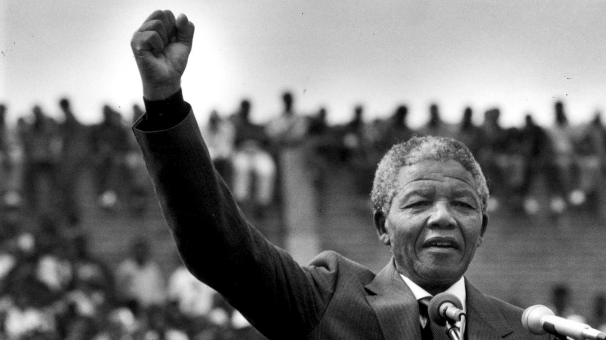

Nelson Mandela
The Man who created a Rainbow Nation

Here's a chronology of Mandela's Life
- 18 July 1918 - born Rolihlahla Mandela in Mvezo, South Africa
- 1925 - Given the name - Nelson - from a primary school teacher
- 1930 - He is entrusted to his local Regent
- 1939 - Enrols at University College of Fort Hare in Alice. Expelled, along with Oliver Tambo, a year later for political activism
- 1942 - Completes his university studies at UNISA.
- 1942 - Starts attending Africa National Congress (ANC) meetings
- 1943 - Enrols for an LLB at Wits University
- 1944 - Co-founds the ANC Youth League. Marries his first wife, Evelyn Ntoko Mase. They have four children
- 1948 - Elected National Secretary of the ANC Youth League
- 1951 - Elected President of the ANC Youth League
- 1952 - Arrested and charged for violating the Suppression of Communism Act
- 1953 - Created the M-plan so that the ANC could operate underground
- 1956 - Arrested and charged with Treason. Acquitted on 29 March 1961
- 1958 - Divorces Ntoko Mase and marries Nomzamo Winnie Madikizela. They have 2 children
- 8 April 1960 - The ANC is banned
- 1961 - Goes underground. The Umkonto weSizwe (MK) is formed
- 11 January 1962 - Leaves South Africa for military training and to gather support for the ANC
- 23 July 1962 - Returns to South Africa
- 5 August 1962 - Arrested in KwaZulu-Natal. This starts his 27 years in prison
- 7 November 1962 - Sentenced to 5 years for incitement and leaving the country illegally
- 27 May 1963 - Sent to Robben Island
- 12 June 1963 - Returns to Pretoria Local Prison
- 3 October 1963 - Pleads not guilty to sabotage in what is known as the Rivonia Trial
- 12 June 1964 - Sentence to life in prison. Returns to Robben Island
- 31 March 1982 - Sent to Pollsmor Prison on the mainland just outside of Cape Town
- 10 February 1985 - Rejects President PW Botha's offer of conditional release
- 7 December 1988 - Transfered to Victor Verster Prison in Paarl
- 2 February 1990 - ANC is unbanned
- 11 February 1990 - Released from Victor Verster Prison
- 5 July 1991 - Elected ANC President
- 10 December 1993 - Awarded the Nobel Peace Prize along with FW de Klerk
- 27 April 1994 - Votes for the first time in his life
- 9 May 1994 - Elected by parliament as the first President of a democratic South Africa. Inaugurated on 10 May 1994
- 14 December 1994 - Releases his autobiography, Long Walk to Freedom
- 1996 - Divorces Winnie Mandela
- 18 July 1998 - Marries Graca Machel
- 1999 - Steps down as president of South Africa after only one term
- 1 June 2004 - Announces he will be stepping down from public life
- 11 July 2010 - Makes an apperance at the FIFA World Cup final in Soweto
- October 2010 - Releases second book, Conversations with Myself
- 5 December 2013 - Died at the age of 95